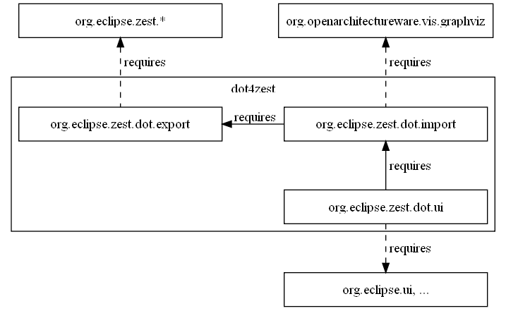

General information, documentation and resources are available at: http://wiki.eclipse.org/Graphviz_DOT_as_a_DSL_for_Zest
Requirements: Eclipse 3.5 and GEF Zest visualization (Galileo), org.eclipse.zest.import (dot4zest)

User documentation is available in the Eclipse help system (content is in folder documentation/).